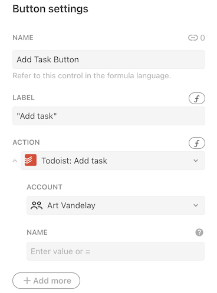
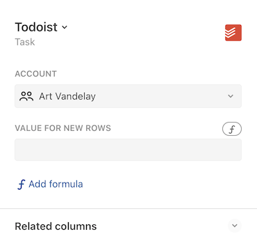
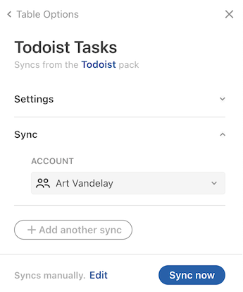
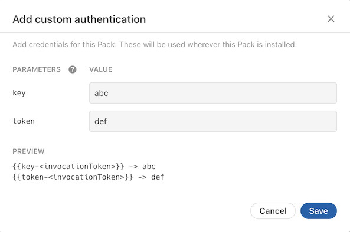
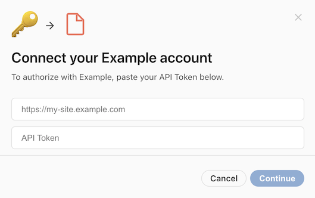
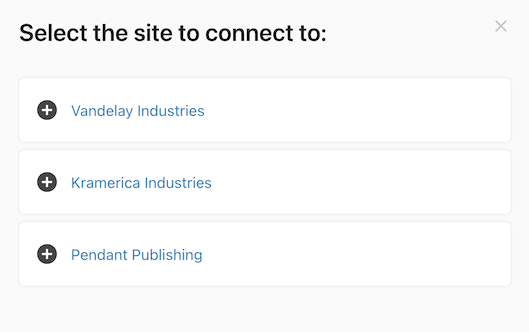

Authenticating with other services¶
One of the key use cases for Packs is integrating Coda with other apps and services, which often involves some form of authentication. When building a Pack you specify the type of authentication required by the API and Coda handles the credentials exchange, token storage, and account management.
Using a Pack with authentication¶
Packs that use system-wide authentication (all users use the Pack makers's credentials) don't require any additional setup by the user, and can be used just like Packs without any authentication.
Packs that support per-user authentication require some additional setup. Users must sign in to their accounts and connect them to Coda, as well as choose which account to authenticate with when using the building blocks from that Pack.
Connecting an account¶
The listing for the Pack will display a Sign in to install button in place of the usual Install button. Upon clicking it the user will immediately be launched into a sign-in flow, which varies depending on the type of authentication used and the service the user is connecting to. After the sign-in flow is complete Coda will ask the user if that connected account should be shared with other users in the same doc.

Users can sign in to additional accounts and change their sharing settings from the Settings tab of the Pack's side panel. Accounts can be reused across docs, and users can manage all of their connected accounts on the Account settings page.
Selecting an account¶
In the formula editor the account is shown as the first parameter to the formula, and in the other dialogs the account to use is displayed as a dropdown list.




Adding authentication to your Pack¶
There are two supported forms of authentication: per-user and system-wide.
Per-user authentication¶
User authentication requires that users of the Pack provide their own credentials. This is the most common form of authentication, as it allows the Pack to access the private data of each user. To add per-user authentication use the setUserAuthentication() method:
pack.setUserAuthentication({
// A variety of different authentication types are supported.
type: coda.AuthenticationType.HeaderBearerToken,
// Additional settings...
});
The types of authentication supported, as well as the additional settings, are described in the sections below.
System-wide authentication¶
System authentication requires the Pack maker to provide a single set of credentials that all users will share. This form of authentication is often used for APIs that require an API key or token, but don't provide access to private data. To add system-wide authentication use the setSystemAuthentication() method:
pack.setSystemAuthentication({
// A variety of different authentication types are supported.
type: coda.AuthenticationType.HeaderBearerToken,
// Additional settings...
});
After adding the code, build a new version of your Pack and then navigate to the Settings tab. There you'll see an Add system authentication button you can use to set the credentials.

The types of authentication supported, as well as the additional settings, are described in the sections below.
Authentication types¶
Coda supports a fixed set of authentication types which cover the most common patterns that APIs use. In addition you can define your own form of custom token authentication to support more complex scenarios. It's not possible to write completely custom authentication code however, as Coda alone has access to the user's credentials. If your API's authentication needs can't be met by any of these types please contact support.
The sections below will cover some of the most common types of authentication, and you can see the full set in the AuthenticationType enum.
Single token¶
Many APIs use tokens or keys for authentication. Per-user tokens are typically generated from a settings screen within the application, while API keys are often generated when registering an app in a developer portal. How you pass these tokens varies depending on the API, and Coda provides built-in support for the most common methods:
Use HeaderBearerToken authentication for APIs that expect the token to be passed in the Authorization header with the prefix Bearer. For example:
GET /users/me
Host: api.example.com
Authorization: Bearer <token>
Can be implemented using:
pack.setUserAuthentication({
type: coda.AuthenticationType.HeaderBearerToken,
});
Use CustomHeaderToken authentication for APIs that expect the token in a custom header, with an optional prefix. For example:
GET /users/me
Host: api.example.com
X-API-Key: <token>
Can be implemented using:
pack.setUserAuthentication({
type: coda.AuthenticationType.CustomHeaderToken,
headerName: "X-API-Key",
});
Use QueryParamToken authentication for APIs that expect the token in a URL query parameter. For example:
GET /users/me?key=<token>
Host: api.example.com
Can be implemented using:
pack.setUserAuthentication({
type: coda.AuthenticationType.QueryParamToken,
paramName: "key",
});
When using per-user authentication, the user will be prompted to enter their token when connecting their account.

Set an instructions URL
It may not be obvious to users where they can find their API token. You can set the instructionsUrl field of the authentication configuration to a relevant help center article, or in some cases directly to the screen within the application that lists the API token. Coda will link to this URL in the dialog.
pack.setUserAuthentication({
type: coda.AuthenticationType.HeaderBearerToken,
instructionsUrl: "https://help.example.com/where-is-my-api-token",
});
Custom tokens¶
Some APIs require a combination of tokens to be used, or for them to be passed in the request body or URL. In these cases you can use the Custom authentication type. Consider this example, where a key is passed in the URL and an additional token is passed in the request body:
POST /api/<key>/users
Host: api.example.com
Content-Type: application/json
{
"token": "<token>",
"name": "Art Vandelay"
}
This can be accomplished using a Custom authentication configuration like:
pack.setSystemAuthentication({
type: coda.AuthenticationType.Custom,
params: [
{name: "key", description: "The API key"},
{name: "token", description: "The account token"},
],
});
Each token defined within the params array will result in an additional prompt in the authentication dialog:

Unlike with other authentication types where the values are added to your fetch requests automatically, with Custom authentication you must manually add these tokens to your request. Wherever you need to inject one of these tokens enter a placeholder value instead, and before your request is sent Coda will replace it with the value of the corresponding token. The placeholder format is {{<paramName>-<invocationToken>}}, where <paramName> is the name of the token you defined and <invocateToken> is the unique ID generated for that execution of your Pack.
pack.addFormula({
// ...
execute: async function ([], context) {
let invocationToken = context.invocationToken;
let keyPlaceholder = "{{key-" + invocationToken + "}}";
let tokenPlaceholder = "{{token-" + invocationToken + "}}";
let url = "https://api.example.com/api/" + keyPlaceholder + "/users";
let body = {
token: tokenPlaceholder,
name: "Art Vandelay",
};
let response = await context.fetcher.fetch({
method: "POST",
url: url,
headers: {
"Content-Type": "application/json",
},
body: JSON.stringify(body),
});
// ...
},
});
Username and password¶
Some APIs authenticate using a username and password, or an equivalent account identifier and secret. The web has long supported this through the "Basic" authorization scheme, where the username and password are encoded and passed in the Authorization header.
GET /users/me
Host: api.example.com
Authorization: Basic <base64 encoded username & password>
You can support this by using WebBasic authentication in your Pack:
pack.setUserAuthentication({
type: coda.AuthenticationType.WebBasic,
});

Customize the dialog
Sometimes Basic authentication is used for other types of identifiers and secrets, and the terms "Username" and "Password" in the dialog can be misleading. You can customize the dialog using the uxOptions field of the authentication configuration.
pack.setUserAuthentication({
type: coda.AuthenticationType.WebBasic,
uxConfig: {
placeholderUsername: "Account ID",
placeholderPassword: "Secret Token",
},
});
OAuth 2.0¶
OAuth 2.0 is a modern, more secure alternative to passing usernames and passwords that has been adopted by many APIs. The details of this protocol can get complicated, but when building a Pack you only need to specify some configuration options and Coda handles the token exchange, storage, refresh, etc.
To configure OAuth2 authentication you must specify the authorization URL and the token URL. These URLs are found in the technical documentation of the API you are connecting to, and will be different for each API.
pack.setUserAuthentication({
type: coda.AuthenticationType.OAuth2,
// These URLs come from the API's developer documentation.
authorizationUrl: "https://example.com/authorize",
tokenUrl: "https://api.example.com/token",
});
After adding the code, build a new version of your Pack and then navigate to the Settings tab. There you'll see an Add OAuth Credentials button you can use to set the Pack's credentials.

These credentials identify your application to the provider, and are the same for every user that uses your Pack. You need to obtain these credentials from the API provider, typically by registering your application in the provider's developer console or portal. These values are typically called the client ID and secret, but may in some cases be referred to using terms like "consumer" or "application".
When registering you application in the API provider's console you will be asked to provide a redirect URL. This is where the provider should redirect the user to after they have signed in and approved access. When building a Pack this value should always be set to:
https://coda.io/packsAuth/oauth2
There are many subtle variations to the OAuth2 flow, and Coda can accommodate a variety of them. You can find the additional configuration options in the OAuth2Authentication documentation.
However if the API provider deviates too far from the OAuth 2.0 specification it may not be possible to find a configuration that will work. Additionally, Coda currently only supports the Authorization Code grant type, and others like Client Credentials can't be used. If you get stuck please contact support to explore other options.
Flexible authentication during token exchange
The OAuth2 specification doesn't require a specific authentication schema your app must use when exchanging tokens. Coda supports the two most popular variants:
- Sending the
client_secretin the JSON body - Sending an
Authorization: Basicheader using the client ID and secret.
No configuration is required, Coda will try them both to see what works.
Requiring authentication¶
If a Pack includes any form of user authentication then by default all of the building blocks within that Pack are assumed to require a connected account. You can set the connectionRequirement property on individual formulas or sync tables to make an account optional or not used.
pack.setUserAuthentication({
// ...
});
pack.addFormula({
name: "NeedsAuthFormula",
// ...
});
pack.addFormula({
name: "NoAuthNeededFormula",
// ...
connectionRequirement: coda.ConnectionRequirement.None,
});
Alternatively, you can set the defaultConnectionRequirement field of the authentication configuration to specify a different default, and then opt-in formulas or sync tables as needed.
pack.setUserAuthentication({
// ...
defaultConnectionRequirement: coda.ConnectionRequirement.None,
});
pack.addFormula({
name: "NeedsAuthFormula",
// ...
connectionRequirement: coda.ConnectionRequirement.Required,
// ...
});
pack.addFormula({
name: "NoAuthNeededFormula",
// ...
});
Setting account names¶
By default the accounts that users connect to will be given the same name as their Coda account. While this works fine the majority of the time, if they are connecting to a team account or multiple accounts it is not very helpful. Therefore we strongly recommend that you implement a getConnectionName function in your authentication configuration to set a more meaningful account name. This is typically done by making a Fetcher request to a user information endpoint in the API and then returning the name of the account.
pack.setUserAuthentication({
// ...
getConnectionName: async function(context) {
let response = await context.fetcher.fetch({
method: "GET",
url: "https://api.example.com/users/me",
});
return response.body.username;
},
});
This function is run after the user has entered their credentials, and the credentials are automatically applied to the Fetcher request.
Use detailed account names
If your service allows users to connect to multiple endpoints, we recommend that you include the endpoint name as well. For example, a pattern like "User Name (Endpoint Name)".
Account-specific endpoints¶
Some services host a unique subdomain for each account, and require that API requests be sent to that subdomain. For example, a user may access the service at vandelay.example.com and the API requests should be sent to vandelay.example.com/api. This is supported in Packs using account-specific endpoints.
The endpoint URL is determined using one of the methods in the sections below. Once set it's available in your formulas and functions via context.endpoint.
pack.addFormula({
// ...
execute: async function ([], context) {
// Retrieve the endpoint that the user set.
let endpoint = context.endpoint;
let url = endpoint + "/api/v1/users/me";
// ...
},
});
Alternatively you can use a relative URL, and it will have the endpoint URL automatically prepended.
pack.addFormula({
// ...
execute: async function ([], context) {
// The endpoint URL will be automatically prepended.
let url = "/api/v1/users/me";
// ...
},
});
Entering manually¶
To require the user to enter the endpoint URL, set the requiresEndpointUrl field to true. For additional validation you can also set the endpointDomain field to the root domain that all subdomains share,
pack.setUserAuthentication({
// ...
requiresEndpointUrl: true,
endpointDomain: "example.com",
});
Endpoint domain must match network domain
The endpointDomain field is used to validate the endpoint URL entered by the user, but doesn't impact which domains your Pack can make requests to. This is controlled by the separate network domain, and in practice these two domains are often set to the same value.
When the user connects to their account they will now also be asked to provide the endpoint URL for their account.

Not compatible with OAuth2
Packs that use OAuth2 authentication don't support a manual prompt for the endpoint URL. They should instead use one of the alternate options listed below.
Extracting from token exchange¶
Some APIs that use OAuth2 authentication return the endpoint URL during the token exchange, as a custom property within the JSON body:
{
"access_token": "...",
"token_type": "bearer",
"site_url": "https://vandelay.example.com"
}
You can automatically extract this value and use it as the endpoint URL by setting the endpointKey field of the authentication configuration.
pack.setUserAuthentication({
type: coda.AuthenticationType.OAuth2,
// ...
endpointKey: "site_url",
});
Prompting for user selection¶
If the service allows the same user account to access multiple endpoints, and those endpoints can be determined with an API call, then you can prompt the user to select the endpoint they wish to connect to. This is accomplished using a postSetup step of the type SetEndpoint.
pack.setUserAuthentication({
// After approving access, the user should select which instance they want to
// connect to.
postSetup: [{
type: coda.PostSetupType.SetEndpoint,
name: "SelectEndpoint",
description: "Select the site to connect to:",
// Generate the list of endpoint options.
getOptionsFormula: async function (context) {
// Make a request to the API to retrieve the sites they can access.
let response = await context.fetcher.fetch({
method: "GET",
url: "https://api.example.com/my/sites",
});
let sites = response.body.sites;
return sites.map(site => {
return { display: site.name, value: site.url };
});
},
}],
});
The step's getOptionsFormula works like dynamic autocomplete, fetching the list of available endpoints and returning a display name and value for each. After the user enters their credentials they will be prompted to select one of the endpoints in a dialog.

Connection name generated twice
When using this feature the getConnectionName function is run multiple times: once before the endpoint is selected and again after. Make sure your code works correctly in both cases. Before the endpoint is available you can return a generic name, which will get overwritten later.